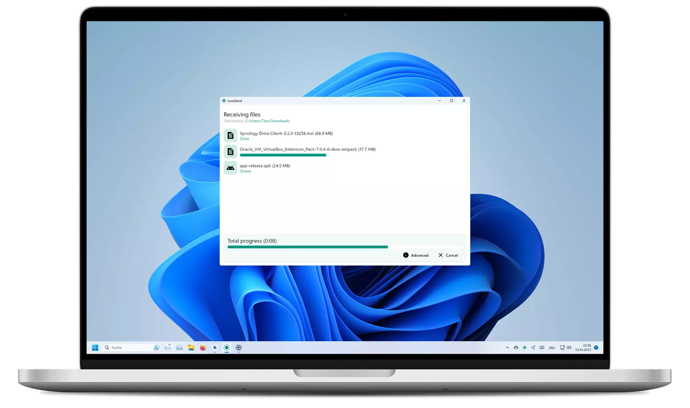

LocalSend 你只用了表层，这几个藏得真深的冷门技巧才是它的灵魂
你以为它只是个局域网发文件的小工具？手动 IP 直连、收藏夹自动接收、命令行脚本化、加密开关的前世今生——把 LocalSend 翻到底朝天，挖出那些官方不宣传但真能救命的隐藏功能。
你是不是也把 LocalSend 当成了一个"打开、选照片、点对方头像"的傻瓜式工具？连上同一 Wi-Fi 就自动发现、拖进去就传完，整个过程不到十秒——好用是好用，但你有没有想过：要是网络环境不配合呢？要是你想把它串进自动化流程呢？要是你想让它在后台悄悄干活不弹任何确认框呢？
我把官网上这款软件翻了个底朝天，从 v1.16 一路追到 v1.18.2 的更新日志，从设置面板的高级选项到命令行工具的帮助文档——藏得真深，好几个功能我用了大半年才偶然发现。今天这篇就把它们一次性抖出来。

第一个：手动 IP 直连——自动发现死掉时的最后一块拼图
先说一个最实用的"救命"功能。你一定遇到过这种场景：两台设备都连在同一个 Wi-Fi，权限全给了、防火墙也放行了，就是互相搜不到——急得想砸手机。
这时候别再反复开关应用了。点开发送页，"附近的设备"标题栏旁边有一排小图标，找那个手写板样式的图标（v1.15 起需要先在高级设置里开启），点进去手动填对方的局域网 IP 地址，端口保持默认 53317。确认之后，应用直接跳过多播、跳过自动发现，向那个地址发起探测——通了就立刻出现在列表里。
这个功能藏得有多深？它不在主界面显眼处，也不在设置面板的常规选项里，必须开了高级设置才看得见。但它能解决的场景太多了：公司网开了客户端隔离、酒店 Wi-Fi 禁了多播、甚至两台设备连的是同一个路由器但分别挂在不同网段——手动 IP 直连都能绕过去。
用通了之后顺手把对方加个收藏（长按设备或详情页的心形按钮），下次它的查找方式就从"等广播公告"变成"定期向已知地址探测"，在多播被禁的网络里稳定得多。如果你有固定要互传的几台设备，这一步做完之后日常传输几乎是无感的。
第二个：加密开关——关掉它并不能让传输变快，早就过时了
设置面板里有个"加密"开关，你是不是也听人说过"关掉加密可以提速"？
这个说法在 v1.17 及更早版本里可能还有点道理，但从 v1.18 开始已经彻底不成立了。它的LocalSend文档里白纸黑字写着：加密不再减缓传输速度，之前关掉的会被重新开启。我自己实测过几次，开开关关对比下来，哪怕是几个 GB 的大文件传输，加密的影响也在毫秒级——完全可以忽略。
更有意思的是，这个开关在两端必须保持一致：两端都开就 HTTPS 加密传输；两端都关才走明文；要是一端开一端关，应用会弹一个"加密已关闭，正在通过未加密的 HTTP 协议连接"的确认提示。这个细节很多人不知道，"看得见却连不上"的排查清单里，加密开关不一致就是容易被忽略的一条。
至于那个自签名证书为什么浏览器会警告"不受信任"——这不是安全问题，是自签名的必然表现，核对地址无误手动放行一次就行，没必要慌。
第三个：命令行工具——脚本化发文件，v1.18 才加的杀手级功能
这是 v1.18 大版本才首发的，也是我觉得最"不为人知"的宝藏功能。LocalSend 以前始终是个图形界面工具，现在它带了完整的命令行接口，意味着你可以把文件传输串进自己的自动化脚本里。
官方文档里给了示例命令：localsend-cli send file.txt，还能指定接收方的设备 ID、超时时间、甚至通过管道接收文本输入。对于经常需要定期把日志文件或批量生成的产物同步到手机的人来说，这相当于打通了最后一公里——写一行 crontab 或者任务计划，就能让电脑每天自动把新文件推到手机上，全程零交互。
可惜的是，这个命令行工具不是默认启用的，安装包从LocalSend下载拿，装的时候记得勾上命令行组件。官方也没有在主界面任何地方做入口提示，完全是留给重度用户自己发现的。
第四个：收藏夹自动接收——让特定设备传文件时完全不弹窗
收藏夹这个概念本身不算新鲜，但它背后的自动化逻辑很多人没摸透。
把设备加入收藏之后，它的传输行为会发生两层变化：第一层是查找方式从被动等多播变成主动探测地址，刚才说过；第二层是 v1.16 引入、v1.18 默认开启的自动保存——收藏夹里的设备给你发文件时，不再弹"接收/拒绝"的确认框，直接自动收进你指定的目录。
这个功能特别适合"我老婆每天把新拍的照片从手机推到我电脑"或者"办公室同事定期给我发表格"这种固定配对场景——你完全不用守着屏幕点确认。但它也有个明确的边界：自动接收只对白名单收藏夹生效，陌生设备依然会正常弹窗；而且 v1.16 那版还是"仅自动接收收藏设备"的雏形，v1.18 才做成了独立可开关的完整功能。
第五个：网络接口过滤——多网卡设备的专属救星
如果你电脑上同时插着网线、连了 Wi-Fi、还挂着一个 VPN——LocalSend 经常会"找错网卡"：它跑去扫了 VPN 虚拟网卡的地址，结果真实 Wi-Fi 上的设备一个都搜不到。
这个问题的解法藏在 v1.17 才加的网络接口过滤里。进设置面板，找到网络相关的分组，你会看到一个列表，列着当前系统所有可用的网卡——物理网卡、虚拟网卡、VPN 网卡全在里面。把你实际在用的那个勾上，其他的取消，应用就只会在你指定的网卡上发多播和建立连接，再也不会乱跑。
这个功能简直是程序员和运维的福音，但它藏得够深——名字本身就不直观，位置也在网络设置的最底部，没碰到过"搜不到设备"的人根本不会去翻。

一个要提醒你的坑：AP 隔离不是它的锅，但它帮不了你绕过去
最后说一个经常被误解的情况。两台设备连同一个 Wi-Fi 互相看不见，十有八九是路由器开了"AP 隔离"——也叫客户端隔离、禁止无线设备互相访问。这是路由器的安全机制，公共 Wi-Fi 和访客网络尤其常见。
手动 IP 直连在某些网络里能绕过去，但真隔离不行——隔离直接把设备间的互访请求全丢了，直连也会超时。这时候唯一可靠的办法是：拿其中一台设备开热点、另一台连热点，自建一个无隔离的小局域网。我试过在公司网、咖啡厅、甚至别人家里都用这招救回来过。
另外，AP 隔离的关闭权限通常不在你手里——如果是自己家的路由器，管理页无线设置里搜"AP 隔离"或者"允许无线设备互相访问"就能找到；没有管理权的时候别硬试，直接开热点最快。
收尾
LocalSend 表面上是个"打开就用"的傻瓜工具，但把它的高级设置翻一遍、版本更新日志追一遍之后你会发现——它藏着的那些功能，刚好踩在"够用的日常"和"好用的自动化"之间的灰色地带。手动 IP 解决网络死角，命令行打通脚本化，收藏夹自动接收省掉反复确认，加密开关的旧经验早该更新了。
把它用透，不是为了显得自己懂技术，而是省下来的那些反复弹窗、反复开关应用、反复搜不到设备的时间，真的可以用来做点别的。LocalSend 本身就是开源项目，感兴趣的朋友可以分别去 GitHub、Gitee 和 GitCode 看看，不同平台的社区活跃度和访问速度不太一样。